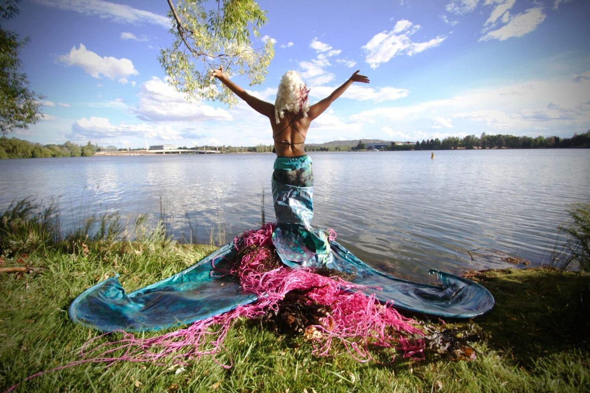
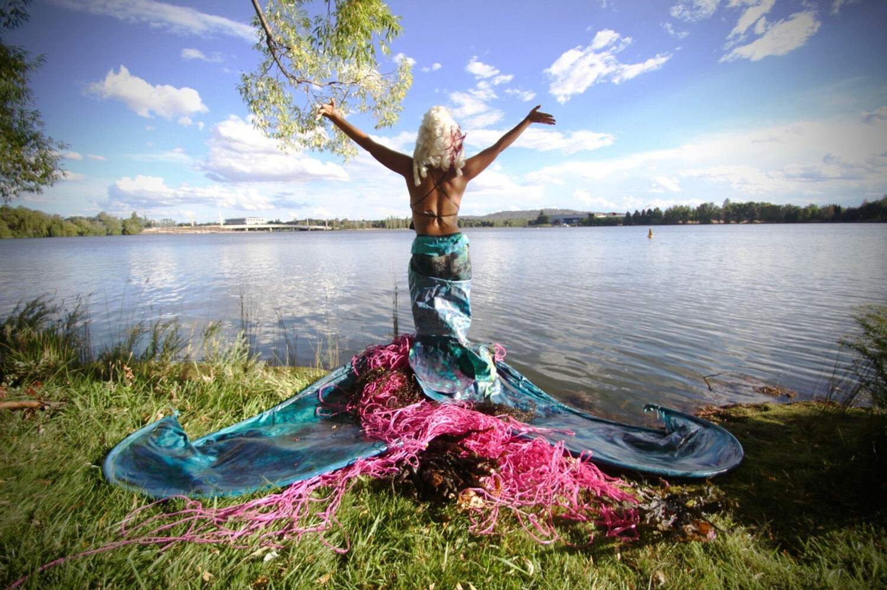

2018
5-18 OCTOBER 2018 LAKE BURLEY GRIFFIN ASPEN ISLAND / BOWEN PLACE KINGSTON ARTS PRECINCT HENRY ROLLAND PARK A free public art event over three weeks presenting artworks and performances by 60 artists in the world famous public realm and national cultural icons around Lake Burley Griffin, Canberra. contour is unique in the field of public sculpture and performance events as it takes place in a consciously designed and culturally layered landscape, in one of only three designed capital cities. The festival site is a place with deep cultural and heritage overlays. All artworks and performances are site specific, drawing inspiration from or reflecting on the cultural or physical character of Canberra. The sense of place of the Canberra lakeside landscape resonates with the artworks and performances. The connections to Canberra’s history provoke a variety of responses from the public that embed a memory of place. The event reinforces the beauty of the designed landscape, and recognises landscapes hidden from view through design. It presents stories of Australia political, cultural and physical history. It includes stories from all Australians, from our past and our future.


 
